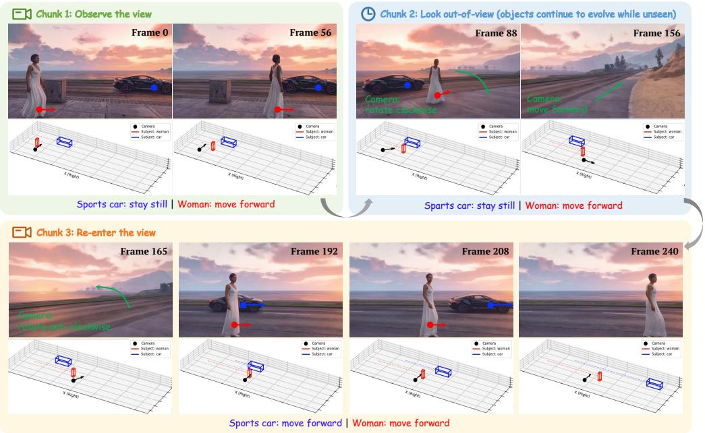

7 月 4 日：From SRA to Self-Flow 等视觉表征主线更新
本期聚焦通用视觉表征、视觉语言预训练与视频自监督中最值得跟进的论文，并保留 CCF A/B、OpenReview 与 arXiv 状态线索。
今天先不要从 VLM 应用论文读起，先读 From SRA to Self-Flow：它直接挑战“Self-Flow 的收益来自跨噪声 token 自监督交互”这一解释，适合和 SRA/Self-Flow 原论文放在一起看。第二篇读 Understanding Geometric Representations in Self-Supervised ViTs，重点看 DINOv2 与 MAE 在 dense geometry 上的编码差异和中间层峰值。第三篇读 D-SSL Non-IID Robustness，只抓 MIM vs CL 的理论结论和 MAR loss。其余 CLIP typographic attack、EADP、LASER、WorldDirector、PointDiT 按“VLM 视觉证据保真/压缩/长时世界模型接口”扫读即可。
论文索引
| 优先级 | 论文 | 类型 | 相关性 | 一句话理由 |
|---|---|---|---|---|
| P0 | From SRA to Self-Flow: Data Augmentation or Self-Supervision? | arXiv new; diffusion self-representation alignment | 高 | 直接追问扩散 Transformer 里的自表征对齐收益到底来自 self-supervision 还是噪声维度数据增强。 |
| P1 | Understanding Geometric Representations in Self-Supervised Vision Transformers via Subspace Intervention | arXiv new; ECCV 2026 | 高 | 用子空间干预解释 DINOv2 与 MAE 如何编码密集几何信息，是今天最贴近通用视觉表征理解的论文。 |
| P2 | Understanding the Robustness of Distributed Self-Supervised Learning Frameworks Against Non-IID Data | arXiv new; ICLR 2026 | 中高 | 把 MIM 与 contrastive learning 放到分布式非 IID 数据理论里比较，对大规模去中心化视觉预训练有参考价值。 |
| P2 | Towards Robustness against Typographic Attack with Training-free Concept Localization | arXiv new; ECCV 2026 provisional | 中 | 从机制解释角度定位 CLIP/LVLM 视觉编码器里对图中文字过敏的注意力组件。 |
| P2 | Combating Textual Noise and Redundancy: Entropy-Aware Dense Visual Token Pruning | arXiv new; ECCV 2026 | 中 | 讨论 VLM dense instruction 下如何保留细粒度视觉证据，和视觉 token 表征压缩直接相关。 |
| P3 | LASER: A Corrective Lens for LVLMs via Visual Attention Preservation and Sink Suppression | arXiv new; ECCV 2026 | 中低 | 不是预训练方法，但它把长链推理中的 visual forgetting 拆成早期注意力衰减和 visual sink token 两个问题。 |
| P3 | WorldDirector: Building Controllable World Simulators with Persistent Dynamic Memory | arXiv new; project page | 中低 | 偏生成和控制，但对视频 world model 中长期身份保持、轨迹和相机控制的表征拆分有启发。 |
| 扫读 | PointDiT: Pixel-Space Diffusion for Monocular Geometry Estimation | arXiv new; ICML 2026 | 中低 | 不是 SSL 主线，但用 DINOv3 image tokens 条件化纯 ViT diffusion backbone，值得扫读几何表征接口。 |
主线阅读

From SRA to Self-Flow: Data Augmentation or Self-Supervision?
高相关；详见方法、贡献和实验边界。
方法：直接追问扩散 Transformer 里的自表征对齐收益到底来自 self-supervision 还是噪声维度数据增强

Understanding Geometric Representations in Self-Supervised Vision Transformers via Subspace Intervention
高相关；详见方法、贡献和实验边界。
方法：用子空间干预解释 DINOv2 与 MAE 如何编码密集几何信息，是今天最贴近通用视觉表征理解的论文

Understanding the Robustness of Distributed Self-Supervised Learning Frameworks Against Non-IID Data
中高相关；详见方法、贡献和实验边界。
方法：把 MIM 与 contrastive learning 放到分布式非 IID 数据理论里比较，对大规模去中心化视觉预训练有参考价值

Towards Robustness against Typographic Attack with Training-free Concept Localization
中相关；详见方法、贡献和实验边界。
方法：从机制解释角度定位 CLIP/LVLM 视觉编码器里对图中文字过敏的注意力组件

Combating Textual Noise and Redundancy: Entropy-Aware Dense Visual Token Pruning
中相关；详见方法、贡献和实验边界。
方法：讨论 VLM dense instruction 下如何保留细粒度视觉证据，和视觉 token 表征压缩直接相关

LASER: A Corrective Lens for LVLMs via Visual Attention Preservation and Sink Suppression
中低相关；详见方法、贡献和实验边界。
方法：不是预训练方法，但它把长链推理中的 visual forgetting 拆成早期注意力衰减和 visual sink token 两个问题

WorldDirector: Building Controllable World Simulators with Persistent Dynamic Memory
中低相关；详见方法、贡献和实验边界。
方法：偏生成和控制，但对视频 world model 中长期身份保持、轨迹和相机控制的表征拆分有启发

PointDiT: Pixel-Space Diffusion for Monocular Geometry Estimation
中低相关；详见方法、贡献和实验边界。
方法：不是 SSL 主线，但用 DINOv3 image tokens 条件化纯 ViT diffusion backbone，值得扫读几何表征接口